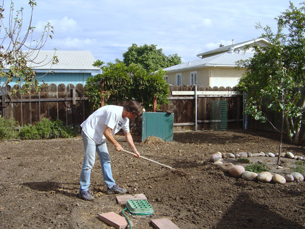
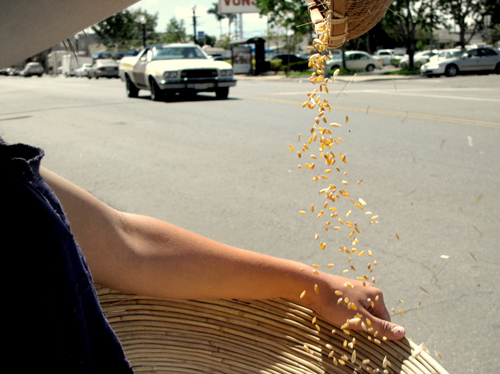

David's advice on growing your own wheat:
Tilling the earth
The first year I grew wheat, I began by buying organic wheat berries from People's Co-op in Ocean Beach, San Diego. There are a number of different varieties of wheat; I have had good luck with both the winter wheat and the kamut.
Once you have the berries, the best time to plant is right before a rain. But rain in San Diego can be difficult to predict, so in October I rake the soil, broadcast the berries into the dirt, and hope for weather. If it rains in the week or so after planting then you're good to go. Wait another week and you should see grass-like sprouts. Since wheat farming relies on the "dry farm" method, you don't need to water (my rain-watered wheat crop was successful even in 2009, when San Diego had only 2 inches of rain). Waiting, on the other hand, is a key skill for any aspiring wheat farmer.
Harvesting in sheaves
In five or six months you should have wheat that is 1-3 feet high. Wait another month and your stalks will be dry enough to harvest. The first time I harvested I tried using a sickle, but it didn't work very well for me. Maybe my sickle blade needed sharpening. Anyway, now I just yank the stalks out of the ground and this method works fine. After harvesting, I tie the wheat into sheaves; a 'sheaf' is as much as your hand will hold. Store your sheaved wheat in a dry place until you are ready to thresh it.
Threshing is a way to separate the wheat berries from the stalk. Lots of techniques work, but one of my favorites is to put the heads of the stalks into a canvas bag, then beat the bag with a stick, your hands, the sidewalk, etc. The idea is to break up the structure of the wheat heads so that the berries loosen from the other plant material.

Winnowing out the chaff
Now you have a bag full of berries and chaff, the unwanted excess plant material. The next step is to winnow the wheat and separate out this chaff. To do this, pour the contents of the bag between two baskets and let the breeze blow away the chaff. Winnow for 10 minutes or so, and perhaps repeat the threshing step at some point mid-process. After winnowing, you will need to pick out the last of the stems and other unwanted particles by hand.
At this point you probably have a handful or so of wheat berries. You can toast the berries whole on the stovetop - with a little olive oil and salt they make a delicious, healthy snack. You can also mill the berries to make flour. My favorite hand-crank mill is Back to Basics' "555 Grain Mill." It is readily available online. I also have a larger "Country Living Grain Mill," but I wouldn't recommend this one unless you are considering adding power to it (I'm attaching mine to my bike). If you don't have your own mill feel free to bring your berries to one of my community harvest events and you can use one of mine.